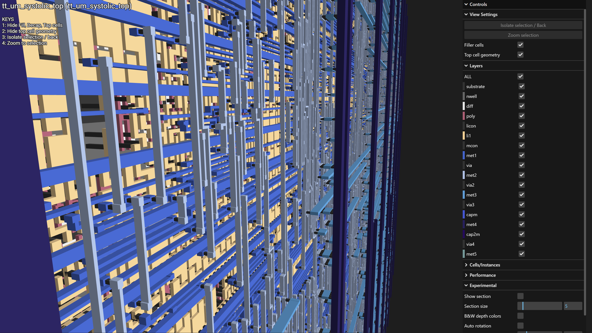

A fully pipelined 4×4 systolic array multiply-accumulate accelerator designed for real silicon on the Tiny Tapeout TTSKY26a community shuttle — 16 processing elements with 4-bit inputs and 10-bit accumulators, controlled via SPI from an RP2040 host, verified on Basys3 FPGA, and taped out on SkyWater 130nm.

overview
Systolic arrays are the core compute primitive behind modern neural network accelerators — Google's TPU, Apple's Neural Engine, and virtually every edge AI chip use variants of this dataflow architecture. This project implements one from scratch in synthesizable SystemVerilog, designed to tape out on the Tiny Tapeout community multi-project wafer.
The design uses a weight-stationary dataflow with 4-bit inputs and 10-bit accumulators — sized deliberately for area efficiency on SkyWater 130nm. A 4-bit multiplier is ~6× smaller than an 8-bit one, bringing the full 4×4 array within Tiny Tapeout tile budget. The 10-bit accumulator is sufficient since the maximum dot product (15² × 4 = 900) fits cleanly with headroom. A control FSM handles the three-phase protocol: LOAD → COMPUTE → READBACK.
architecture
Each of the 16 PEs performs a MAC operation each clock cycle: acc += a_reg * b_reg — using registered inputs rather than direct inputs so data propagates with the correct one-cycle delay as it travels across the array. In weight-stationary mode, the weight is loaded once and held. The characteristic diagonal "wave" of valid data means output[i][j] is valid at cycle i + j + N, and comp_done asserts at counter cycle 7 (2N−1 = 7 for N=4).
Cycle-accurate model of the skewed dataflow: PE[i][j] consumes A[i][k] and B[k][j] at cycle t = i + j + k, so a diagonal wavefront of activity sweeps the array and every accumulator settles by cycle 3N−3 = 9. Feed cells show the skewed values entering the array boundary each cycle.
The FSM drives the three-phase protocol that coordinates SPI, the array, and the readback engine. Input skewing — inserting cycle-offset delays so that row i of A and column j of B arrive at PE[i][j] simultaneously — is generated entirely in the COMPUTE state, avoiding any external buffering requirement.
| STATE | DESCRIPTION |
|---|---|
| IDLE | Waiting for SPI load to complete (load_done assertion) |
| CLEAR | Synchronous reset of all 16 PE accumulators — one full cycle before any MAC activity |
| LOAD | Asserts start to PEs; boundary logic feeds skew-delayed A rows and B columns |
| COMPUTE | Counter increments each cycle; array accumulating; comp_done asserts at cnt == 7 |
| DRAIN | Enables SPI TX to serialize the 16 × 10-bit results back to the RP2040 |
modules
The design is split into seven source files with a strict compile order: primitives.sv → pe.sv → systolic_array_4x4.sv → spi_slave.sv → spi_tx.sv → control_fsm.sv → tt_um_systolic_top.sv. Each module is independently testable.
Single MAC unit — acc += a_reg × b_reg per clock. 4-bit inputs, 10-bit accumulator. Registered pass-through on A and B creates the one-cycle propagation delay the systolic dataflow depends on.
pe.sv16 PE instances in a mesh connected by generate loops. Boundary logic skews A rows and B columns using the cycle counter: row i feeds at cnt >= i, col j feeds at cnt >= j.
5-state one-hot FSM: IDLE → CLEAR → LOAD → COMPUTE → DRAIN. The explicit CLEAR state before COMPUTE was the fix for the accumulator corruption bug found on Basys3.
control_fsm.svDeserializes 33 SPI bytes (1 command + 16 A bytes + 16 B bytes) into 4×4 unpacked arrays. Asserts load_done when complete to trigger the FSM.
Serializes 16 × 10-bit results back to the RP2040 on MISO after DRAIN is entered. Handles MSB-first transmission gated by comp_done.
Tiny Tapeout top-level conforming to yaml_version: 6 port conventions. Maps all modules to the 8-bit ui_in / uo_out / uio_* bus. Includes a primitives.sv layer for DFFs and synchronizers.
hardware debugging
Before finalizing RTL for tapeout, the design was synthesized on a Basys3 (Artix-7) FPGA with a UART test harness for hardware-in-the-loop verification. Three bugs were caught that simulation hadn't surfaced:
acc_clear a full cycle before any MAC begins.comp_done was asserted at cnt == 6 but the PE pipeline register meant results weren't architecturally visible until cycle 7. Fix: assert at cnt == 7.start gate on the PE wasn't high in time for the very first valid cycle at [0][0], causing the first multiply to be dropped. Fix: ensured start is asserted one cycle before data enters the array boundary.Vivado synthesis confirmed timing closure at the target clock frequency with comfortable slack. The 4-bit multipliers synthesize entirely to LUT logic (no DSP48E1 primitives consumed), and the full 4×4 array fits with low utilization — validating there are no synthesis-blocking constructs before committing to the shuttle.
Rather than Vivado's ILA (which adds LUT overhead and complicates timing closure), a lightweight UART readback path was wired in for hardware testing: the Basys3 receives test vectors over UART at 115200 baud, runs the full CLEAR → LOAD → COMPUTE → DRAIN sequence through the actual synthesized RTL, and streams the 16 output values to a Python script that compares them against a NumPy golden model. Any mismatch prints PE coordinates, expected value, actual value, and cycle number.
verification
The simulation testbench drives the array with constrained random stimulus across 1,000-cycle runs. Randomized 4-bit A and B matrix inputs are generated in SystemVerilog and mirrored to a Python golden model; every output is checked against the software reference and any mismatch asserts a failure flag with full diagnostic output — PE coordinates, expected value, actual value, and cycle number.
Constraint groups target corner cases that exercise accumulator boundaries: all-zeros, all-ones, max value (0xF), and mixed patterns. These ensure the 10-bit accumulator ceiling (15² × 4 = 900 max, well within 10-bit range) and the synchronous clear behavior are hit repeatedly alongside the random baseline. The pe_tb passes 1,000/1,000 directed random trials.
| RESOURCE | USED | AVAILABLE | NOTES |
|---|---|---|---|
| LUT | ~180 | 20,800 | 4-bit multipliers synthesize entirely to LUT logic |
| FF | ~160 | 41,600 | PE registers + FSM state + SPI shift regs |
| DSP48E1 | 0 | 90 | No DSP inference — 4×4 mults too small |
| Critical Path | — | timing closure confirmed, comfortable slack | |
code
The PE is the heart of the design — 20 lines of RTL that encode the entire systolic dataflow. The start gate prevents spurious accumulation before the FSM is ready; the registered a_reg / b_reg (not the raw inputs) are what get multiplied, creating the one-cycle propagation delay that makes the wavefront work.
module pe (
input logic clk,
input logic rst_n, clear, start,
input logic [3:0] a_in, b_in,
output logic [3:0] a_out, b_out,
output logic [9:0] acc
);
logic [3:0] a_reg, b_reg;
always_ff @(posedge clk or negedge rst_n) begin
if (!rst_n) begin
a_reg <= 4'b0;
b_reg <= 4'b0;
acc <= 10'b0;
end else if (clear) begin
acc <= 10'b0;
a_reg <= 4'b0;
b_reg <= 4'b0;
end else if (start) begin
a_reg <= a_in;
b_reg <= b_in;
acc <= acc + (a_reg * b_reg); // registered inputs — one-cycle propagation delay
end
end
assign a_out = a_reg;
assign b_out = b_reg;
endmodule : pe
3d layout viewer